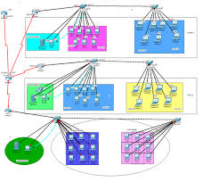
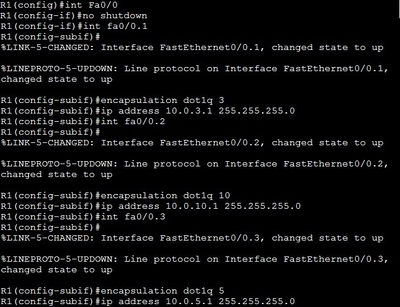
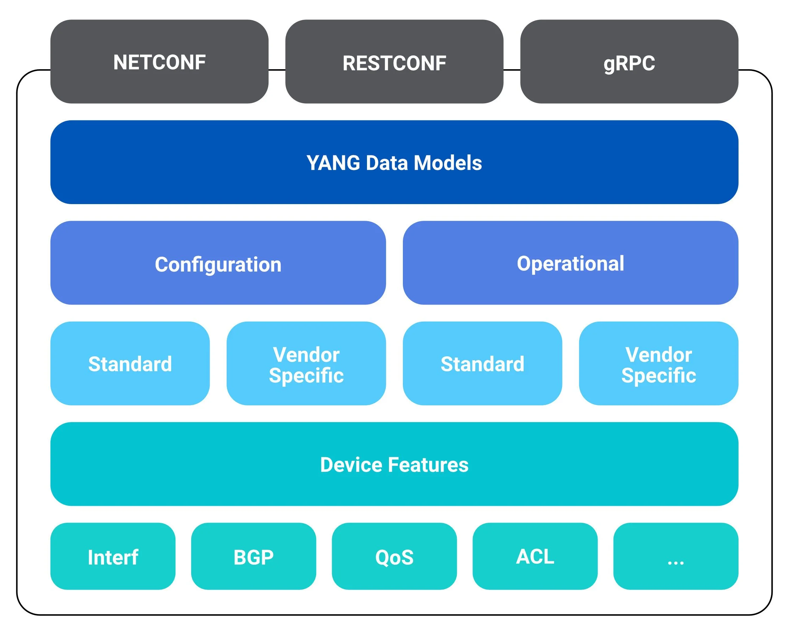

Project Overview
This project simulates a complete enterprise network using Cisco Packet Tracer. The network includes VLAN segmentation, inter-VLAN routing, DHCP, DNS, NAT and security through ACLs.

Network Components
- VLANs for each department
- Router-on-a-stick inter-VLAN routing
- Centralized DHCP server
- Internal DNS server
- NAT for internet access
- ACLs to restrict inter-department access

Final Result
The network operates with full segmentation, secure access control, and automated IP assignment. The design is scalable and suitable for real-world enterprise use.